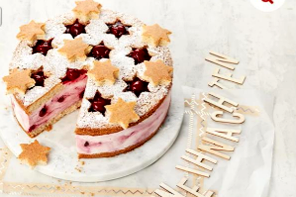

Sternenzaubertorte
Teig
- 1 Backm. Dr. Oetker Käse-Sahne-Torte
- 100g weiche Margarine oder Butter
- 1 TL Spekulatiusgewürz
- 3 Eier (Größe M)
Füllung
- 500g kalte Schlagsahne
- 200ml Wasser
- 500g Speisequark (Magerstufe)
- 500g Dr. Oetker Kirsch Grütze
Zubereitung
-
Vorbereiten
Den Boden der Springform fetten und mit Backpapier auslegen.
Backofen vorheizen:
Ober-/Unterhitze ca. 170 °C, Heißluft ca. 150 °C.
-
Teig zubereiten
Die Backmischung in eine Rührschüssel geben. Margarine oder Butter, Spekulatiusgewürz und Eier hinzufügen und mit dem Mixer (Rührstäbe) zunächst auf niedrigster, dann auf höchster Stufe in ca. 3 Minuten zu einem glatten Teig verarbeiten.
Den Teig in die Springform füllen und glatt streichen.
Die Form auf den Rost im unteren Drittel des Backofens stellen.
Backzeit: ca. 30 Minuten.
Danach den Boden aus der Form lösen, auf einen mit Backpapier belegten Kuchenrost stürzen und vollständig erkalten lassen.
-
Den Boden einmal waagerecht durchschneiden.
Um den unteren Boden einen Tortenring oder den gesäuberten Springformrand stellen.
Den oberen Boden auf eine Platte legen.
-
Füllung zubereiten
Sahne steif schlagen.
Die Mischung für die Füllung (liegt der Backmischung bei) mit Wasser in einer Rührschüssel mit einem Schneebesen glatt rühren.
Zuerst Quark unterrühren, dann die Sahne unterheben.
Zum Schluss die Kirschgrütze (2 EL zurücklassen) vorsichtig mit einem Teigschaber unterheben, sodass eine marmorierte Creme entsteht.
Die Füllung auf den unteren Boden streichen.
Aus dem oberen Boden ca. 10 Sterne (Ø 5 cm) ausstechen und beiseitelegen.
Den oberen Boden auflegen und die Sternenzauber-Torte mindestens 4 Stunden in den Kühlschrank stellen.
-
Sternenzauber-Torte verzieren
Den Tortenring oder Springformrand mit einem Messer lösen und entfernen.
Vor dem Servieren die Torte mit Dekorzucker (liegt der Backmischung bei) bestreuen.
Die Sterne mit der restlichen Grütze füllen und dekorativ auflegen.